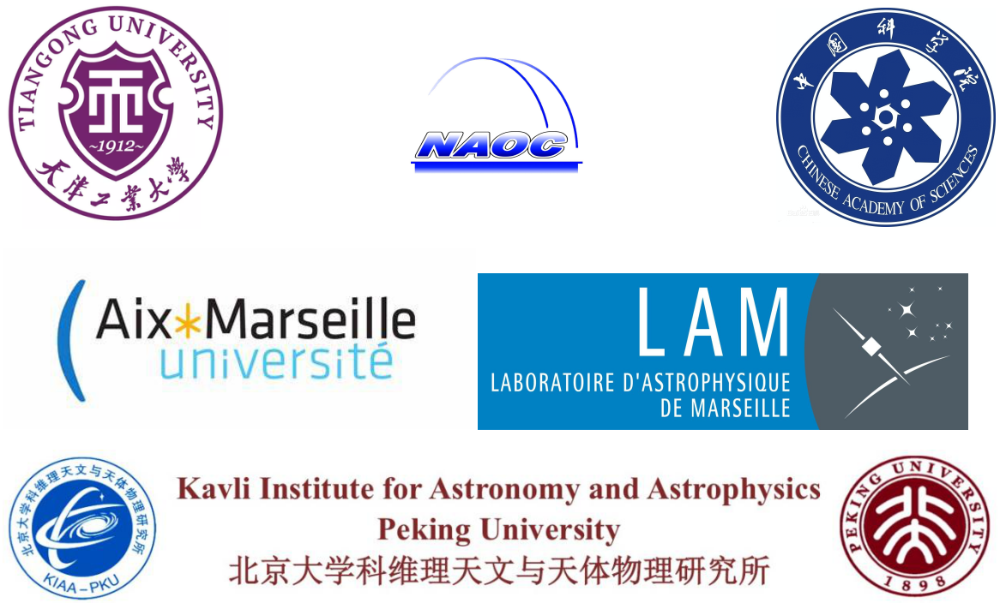

About Me
EDUCATION:
Jun. 2021 - Now KIAA Fellow, Kavli Institute for Astronomy and Astrophysics -Peking University, CN
Host: Prof. Ke Wang
Oct. 2017 - Dec. 2020 PhD in Astrophysics, Laboratoire d’Astrophysique de Marseille, FR
Thesis: The interplay between HII regions and the earliest stages of high-mass star formation in our Galaxy
Advisor: Prof. Annie Zavagno
Sep. 2013 - Jul. 2016 MSc in Astrophysics, National Astronomical Observatories, CAS, CN
Thesis: Feedback of Herbig Ae/Be star on molecular cloud and star formation
Advisor: Prof. Yuefang Wu (Peking Uni.), Prof. Jinzeng Li (NAOC)
Sep. 2009 - Jul. 2013 BSc in Applied Physics, Tiangong University, CN
RESEARCH INTERESTS:
The Interactions Between HII Region, Star Formation, And Molecular Clouds
Radio Astronomy
PUBLICATIONS: ADS link